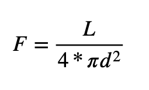
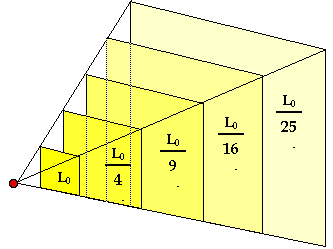

ဆက်စပ်ဆောင်းပါး – အာကာသ ထဲကို ဘယ်လောက် ဝေးဝေးထိ မြင်နိုင်သလဲ
အလင်းရောင် ဘယ်လောက် ဝေးဝေး ရောက်နိုင်လဲ ဆိုတာ မဆွေးနွေးမီ အလင်းရဲ့ အား အနည်းအများ ဘယ်လို ဖြစ်လာလဲ ဆိုတာလေး တချက် ကြည့်လိုက် ရအောင်ပါ။ အလင်းဟာ ဖိုတွန် (Photon) လို့ ခေါ်တဲ့ အလင်းမှုန် လေးတွေနဲ့ ဖွဲ့စည်းထားတာပါ။ ဒီ ဖိုတွန် တွေဟာ တစ်စက္ကန့်ကို မိုင်ပေါင်း ၁၈၆,၀၀၀ ကျော် အမြန်နှုန်းနဲ့ အာကာသထဲမှာ ခရီးနှင် ကြပါတယ်။ ဒီ ဖိုတွန် လေးတွေ ကျွန်တော်တို့ မျက်လုံးထဲက ရက်တီနာ (retina) ခေါ်တဲ့ “မြင်လွှာ” ပေါ် ကျရောက်တဲ့အခါမှာ အလင်းအဖြစ် မြင်ကြရတာ ဖြစ်ပါတယ်။
အလင်းရဲ့ အား အနည်းအများဟာ ဒီ ဖိုတွန် အရေအတွက် အနည်းအများပေါ် မူတည်ပါတယ်။ ဥပမာ ဖယောင်းတိုင် မီးက ဖိုတွန်ထွက်တာ နည်းတာမို့ မှိန်နေတာ ဖြစ်ပြီး သင့်အိမ်က မီးချောင်းကတော့ ဖိုတွန်တွေ အများကြီး ထွက်လာတာမို့ ပိုပြီး လင်းနေတာ ဖြစ်ပါတယ်။
ဒီ ဖိုတွန်တွေဟာ အလင်းလျှင်နှုန်းနဲ့ ရွှေ့လျားလာတာ ဖြစ်ပါတယ်။ နေက အလင်း ကမ္ဘာကို ရောက်လာတယ် ဆိုတာက နေကလာတဲ့ ဖိုတွန်တွေ ကမ္ဘာကို ရောက်လာတာ ဖြစ်ပါတယ်။ နေက လာတဲ့ အလင်း ကမ္ဘာကို ရောက်ဖို့ အချိန် ၈ မိနစ်ကျော် ကြာတယ် ဆိုတာက နေက ထွက်လာနေတဲ့ ဖိုတွန်လေး တစ်လုံးဟာ ကမ္ဘာမြေပေါ် ရောက်အောင်လို့ ၈ မိနစ်ကျော် ကြာအောင် ခရီးနှင်လာ ရလို့ပဲ ဖြစ်ပါတယ်။ (ဖိုတွန် က တစ်လုံးထဲ လာတာ မဟုတ်ပါဘူးနော်။ တကယ်က မရေတွက်နိုင်ပါဘူး။ တစ်လုံး ဆိုတာက နားလည်အောင် သဘော ပြောပြတာပါ။)
ကောင်းပါပြီ။ ဒါဆို ဒီ ဖိုတွန် တွေဟာ ဘယ်လောက် ဝေးဝေးထိ ရောက်နိုင် သလဲ။
ဖိုတွန်တွေဟာ ကြားမှာ သူတို့ကို တားဆီးမဲ့ အတားအဆီးသာ ရှိမနေဘူး ဆိုရင် စကြာဝဠာ ဆုံးတဲ့ အထိ ခရီးနှင်နိုင်ပါတယ်။ ကြားက အတား အဆီး ဆိုတာက အလင်း မပေါက်တဲ့ အရာဝတ္ထု တွေတင်မကပဲ အလင်းကို စုပ်ယူနိုင်တဲ့ ဓါတ်ငွေ့ မော်လီကျူးတွေ နဲ့ အလင်းကို ပြန့်ထွက် သွားစေနိုင်တဲ့ ဖုန်မှုန့်တွေလဲ ပါဝင်ပါတယ်။ ဒီတော့ သီအိုရီ အရတော့ ကြားမှာ ဘာနဲ့မှ မတိုက်မိရင် အလင်းဖိုတွန်တွေဟာ စကြာဝဠာ အဆုံး အထိ ရောက်နိုင်တယ် ဆိုပေမယ့် တကယ် လက်တွေ့မှာတော့ ကြားမှာ တစ်ခုမဟုတ် တစ်ခုနဲ့ တိုက်မိပြီး စုပ်ယူ ခံလိုက်ရတာ (သို့) ပြန့်ထွက် သွားတာမျိုး ဖြစ်နိုင်ပါတယ်။
ကောင်းပြီ ဒါဆိုရင် နေက ထွက်တဲ့ ဖိုတွန်တွေ ထဲက အများစုက လမ်းမှာ တိုက်မိပြီး ပြန့်ကျဲ သွားကြတယ် ဆိုပါစို့။ ဒါပေမယ့် ကံကောင်းတဲ့ ဖိုတွန်လေး တလုံးကတော့ ကြားမှာ ဘယ်အရာ နဲ့မှ ထိပ်တိုက် မတွေ့ပဲ စကြာဝဠာရဲ့ အဆုံးအထိ ရောက်သွားတယ် ဆိုပါစို့ဗျာ။ ဒါဆို အဲ့သည် စကြာဝဠာ အစွန်းကနေ အဲ့သည်ဖိုတွန်လေးကို ဖမ်းမိရင် နေရဲ့ အလင်းရောင်ကို မြင်ရ နိုင်မလား။
ဒီနေရာမှာ ဖိုတွန် မျက်လုံးထဲ ဝင်သွားပြီး မြင်လွှာပေါ် ကျတာနဲ့ မြင်ရတာဟာ မတူပါဘူး။ လူ့မျက်လုံးက မြင်နိုင်ဖို့ဆို ဖိုတွန် တစ်လုံးလောက်နဲ့ မရပါဘူး။ မြင်ရတဲ့ အဆင့်ရောက်ဖို့ဆို ဖိုတွန် အရေအတွက် မြောက်အများ လိုအပ်မှာ ဖြစ်ပါတယ်။ ဒါ့ကြောင့် ဖိုတွန်တွေ လုံလုံ လောက်လောက် မျက်လုံးထဲ မဝင်နိုင်တော့ရင် နေရဲ့ အလင်းရောင်ကိုလဲ မြင်ရဖို့ မဖြစ်နိုင် တော့ပါဘူး။
ကောင်းပြီး ဒါဆို နက္ခတ်ကြည့် မှန်ပြောင်းတွေ ကရော ဘာလုပ်ပေးတာလဲ။ ဒီနေရာမှာ မှန်ပြောင်းနဲ့ ကြည့်လိုက်ရင် ဝေးဝေးက အရာတွေကို နီးလာသလို မြင်ရတော့ အချို့က ထင်တာက အဲ့သည် နေရာက အလင်းကို ဒီကနေ လှမ်းဆွဲလိုက်တယ်လို့ ထင်နေကြတာပါ။ တကယ်က မူလ နေရာက အလင်းကို လှမ်းဆွဲတာ မဟုတ်ပါဘူး။
မှန်ပြောင်းတလက်ဟာ တကယ်က ကိုယ့်ဆီကို ရောက်လာတဲ့ ဖိုတွန်တွေကို စုပေးတာပါ။ ဥပမာ မျက်လုံးထဲကို ပုံမှန် ဖိုတွန် ၁,၀၀၀ လောက် ဝင်မယ်ဆို မှန်ပြောင်းနဲ့ စုလိုက်တော့ ဖိုတွန် ၅,၀၀၀ ဖြစ်ချင် ဖြစ်သွားပါမယ် (ဥပမာ ပြောတာပါ။ တကယ်က ဖိုတွန် ဘယ်နှစ်လုံး ဆိုတာ ရေတွက်ဖို့ မဖြစ်နိုင်ပါဘူး)။ ဒီတော့ မှန်ပြောင်း ကျယ်လေလေ (မှန်ဘီလူး အဝ ကျယ်လေလေ) ဖိုတွန် အဝင် များလေလေ၊ ဝေးဝေး မြင်ရလေလေပဲ ဖြစ်ပါတယ်။
ဒါဆို အလင်းကို ဘယ်နေရာ လောက် အထိ မြင်ရမလဲ။
ကြားမှာ ဘာမှ ခုခံမှု မရှိဘူး ဆိုရင် ဖိုတွန် အားလုံးဟာ စကြာဝဠာ အဆုံးထိ အနှောက်အယှက် အတားအဆီး မရှိ ခရီးနှင်နိုင်မှာ ဖြစ်လို့ စကြာဝဠာ အဆုံး ကနေတောင် မြင်နိုင်မလား။
ဒီလိုတော့ မဟုတ်ပါဘူး။ ဘာ့ကြောင့်ဆို ဖိုတွန်တွေဟာ စက်ဝိုင်းပုံစံ ပြန့်ထွက်လာလို့ ဖြစ်ပါတယ်။ နေကို ကြည့်လိုက်ရင် နေက အလုံးကြီးမို့ ထွက်လာတဲ့ ဖိုတွန် တွေဟာလဲ ဒီ အလုံးကြီးရဲ့ အခုံးအတိုင်း ၃၆၀ ပတ်လည် ပြန့်ထွက်သွားတာ ဖြစ်ပါတယ်။
ဒီတော့ အကွာအဝေး ဝေးလာလေလေ ဖိုတွန်တွေ တစ်ခုနဲ့ တစ်ခု အကြား ခြားသွားလေလေ ဖြစ်လာပါတယ်။ တနည်းအားဖြင့် ဧရိယာ အကျယ်အဝန်း တစ်ခုအတွင်းကို ကျရောက်တဲ့ ဖိုတွန် အရေအတွက်ဟာ အကွာအဝေး ဝေးလာလေလေ နည်းသွား လေလေဖြစ်ပါတယ်။
ကောင်းပါပြီ။ ဒါဆို ဘယ်လောက် နည်းသွားသလဲ။ နှစ်ဆ ဝေးသွားရင် တဝက် နည်းသွား သလား။ အကွာအဝေး ၁၀ ဆ ဝေးသွားရင်ရော အလင်းရဲ့ အားက ၁၀ ပုံ တစ်ပုံ အထိ ကျသွားသလား။
အလင်း ထွက်ပေါ်တဲ့ ပင်ရင်းကနေ အကွာအဝေး အလိုက် အလင်းရဲ့ ပြင်းအား ဘယ်လောက်ထိ လျှော့ကျ သွားမလဲ ဆိုတာကို တွက်တဲ့ ဖော်မြူလာ ရှိပါတယ်။

ဒီ ဖေါ်မြူလာကို လေ့လာ ကြည့်ရင် အလင်းရဲ့ ပြင်းအားဟာ အလင်းထွက်တဲ့ မူရင်းကနေ အကွာ အဝေးရဲ့ နှစ်ထပ်ကိန်းနဲ့ ပြောင်းပြန် အချိုး ကျပါတယ် (1/d^2)။
ဒါက ဘာကို ဆိုလို တာလဲ ဆိုတော့ အကွာအဝေး နှစ်ဆ ဖြစ်သွားရင် အလင်းအားက ၁/၄ ကျသွားပါတယ်။ အကွာအဝေး ၃ ဆဆို အလင်းအား ၁/၉ ကျသွားပြီး အကွာအဝေး ၄ ဆ ဝေးသွားရင် အလင်းအား ၁/၁၆ ပုံ ကျသွားပါတယ်။ အကွာအဝေး ၁၀ ဆ ဝေးသွားရင် အလင်းအားက ၁/၁၀၀ ကျသွားမှာ ဖြစ်ပြီး အကွာအဝေး အဆ ၁၀၀ ဝေးသွားရင်တော့ အလင်းအား ၁/၁၀,၀၀၀ ထိ ကျသွားမှာ ဖြစ်ပါတယ်။

ဒီတော့ ဘာ့ကြောင့် ကြယ်တွေဆီက အလင်းကို မှုန်ပြပြပဲ မြင်ရတာလဲ ဆိုရင် ဝေးလွန်းလို့ လို့ပဲ ဖြေရပါမယ်။ ဝေးလာတာနဲ့ အမျှ အလင်းရဲ့ အားက နှစ်ထပ်ကိန်း ပြောင်းပြန် အတိုင်း ကျဆင်းသွားတာမို့ ကျွန်တော်တို့ မျက်စေ့ထဲ ဝင်တဲ့ ဖိုတွန် အရေ အတွက်ဟာ အတော်လေး နည်းသွားပါတယ်။ ဒါ့ကြောင့်လဲ အရမ်းဝေးတဲ့ ကြယ်တွေကို မမြင်နိုင် တော့တာ ဖြစ်ပါတယ်။
ဒါဆို ကျွန်တော်တို့ရဲ့ နေက အလင်းကရော ဘယ်လောက်ထိ ရောက်မှာလဲ။
နေက ဖိုတွန်တွေကတော့ စကြာဝဠာ အဆုံးအထိ ရောက်ကောင်း ရောက်နိုင်ပါတယ် (ကြားက ဖုန်မှုန့် နဲ့ ဓါတ်ငွေ့တွေက စုပ်မယူ လိုက်ဘူး ဆိုရင်ပေါ့။) ဒါပေမယ့် မြင်ရ မမြင်ရ ဆိုတာကတော့ အကွာအဝေးပေါ် မူတည်ပါတယ်။
ရူပဗေဒ ပညာရှင် တွေရဲ့ တွက်ချက်မှု အရ ကျွန်တော်တို့ နေကို အလင်းနှစ် ၅၈ နှစ် အဝေးကနေ ခပ်မှိန်မှိန် ပြပြလေး မြင်နိုင်ပါသေးတယ်တဲ့။ အဲ့သည် အကွာအဝေး ကနေဆို နေကို ခပ်မှိန်မှိန် ကြယ်လေး တစ်လုံး အနေနဲ့ တွေ့ကြရ မှာပါ။ အလင်းနှစ် ၅၈ နှစ်ထက် ဝေးသွား ခဲ့ရင်တော့ နေကို နက္ခတ်တာရာကြည့် မှန်ပြောင်းတွေ အကူအညီ မပါပဲ သာမန် မျက်စေ့နဲ့ မြင်နိုင်စွမ်း ရှိတော့မှာ မဟုတ်ပါဘူး။
— မောင်သူရ (မြန်မာ့သိပ္ပံ) —